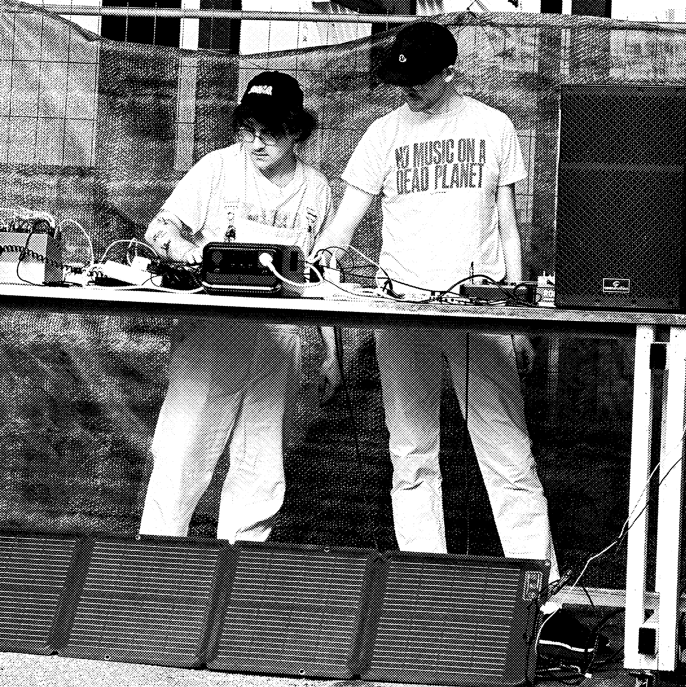

About s01system
What does it mean to make electronic music sustainably? s01system is a solar-powered creative tech lab that explores the intersection of music technology and the environment through sound, code, and community.
Borrowing ideas from permacomputing, we experiment with new ways of creating, experiencing and releasing music sustainably. Led by Duncan Geere and Kotte Aistre, alongside an ever-evolving roster of collaborators, our aim is not to provide final answers, but to explore ideas that point toward a future for music and our planet that's worth being excited about.
